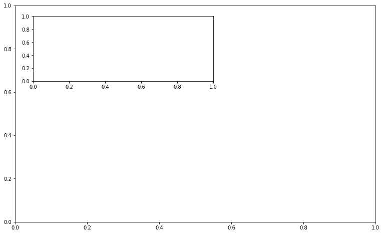

import matplotlib
import matplotlib.pyplot as plt
import numpy as np
import pandas as pd
matplotlib.interactive(True)
plt.ion()
matplotlib.is_interactive()
True
Dataset¶
This contains the closing price of 10 stocks on the first trading day of each month from Jan 2007 to Jan 2017.
Data obtained from finance.yahoo.com
stock_data = pd.read_csv('datasets/stocks.csv')
stock_data.head()
| Date | AAPL | ADBE | CVX | GOOG | IBM | MDLZ | MSFT | NFLX | ORCL | SBUX | |
|---|---|---|---|---|---|---|---|---|---|---|---|
| 0 | 3-Jan-07 | 11.107141 | 38.869999 | 50.777351 | 251.001007 | 79.242500 | 17.519524 | 24.118483 | 3.258571 | 15.696321 | 15.752188 |
| 1 | 1-Feb-07 | 10.962033 | 39.250000 | 48.082939 | 224.949951 | 74.503204 | 16.019426 | 22.092464 | 3.218571 | 15.028588 | 13.930813 |
| 2 | 1-Mar-07 | 12.037377 | 41.700001 | 51.900383 | 229.309311 | 75.561348 | 16.009354 | 21.857189 | 3.312857 | 16.583584 | 14.138198 |
| 3 | 2-Apr-07 | 12.930043 | 41.560001 | 54.588032 | 235.925919 | 81.934280 | 16.924608 | 23.480597 | 3.167143 | 17.196436 | 13.984914 |
| 4 | 1-May-07 | 15.701322 | 44.060001 | 57.598267 | 249.204208 | 85.786057 | 17.111704 | 24.146753 | 3.128572 | 17.726965 | 12.988567 |
Convert the Date field to datetime format¶
This makes it easier to use the values in a plot
stock_data['Date'] = pd.to_datetime(stock_data['Date'])
stock_data.head()
| Date | AAPL | ADBE | CVX | GOOG | IBM | MDLZ | MSFT | NFLX | ORCL | SBUX | |
|---|---|---|---|---|---|---|---|---|---|---|---|
| 0 | 2007-01-03 | 11.107141 | 38.869999 | 50.777351 | 251.001007 | 79.242500 | 17.519524 | 24.118483 | 3.258571 | 15.696321 | 15.752188 |
| 1 | 2007-02-01 | 10.962033 | 39.250000 | 48.082939 | 224.949951 | 74.503204 | 16.019426 | 22.092464 | 3.218571 | 15.028588 | 13.930813 |
| 2 | 2007-03-01 | 12.037377 | 41.700001 | 51.900383 | 229.309311 | 75.561348 | 16.009354 | 21.857189 | 3.312857 | 16.583584 | 14.138198 |
| 3 | 2007-04-02 | 12.930043 | 41.560001 | 54.588032 | 235.925919 | 81.934280 | 16.924608 | 23.480597 | 3.167143 | 17.196436 | 13.984914 |
| 4 | 2007-05-01 | 15.701322 | 44.060001 | 57.598267 | 249.204208 | 85.786057 | 17.111704 | 24.146753 | 3.128572 | 17.726965 | 12.988567 |
Draw two axes¶
One axis is for the main data, the other is for reference. We set the coordinates to try to prevent the second axis from obscuring the line on thefirst axis
fig = plt.figure(figsize=(10,6))
ax1 = fig.add_axes([0, 0, 1, 1])
ax2 = fig.add_axes([0.05, 0.65, 0.5, 0.3])

Draw the lines for two of the stocks¶
Here, we examine AAPL close prices and compare to IBM during the same period
fig = plt.figure(figsize=(10,6))
ax1 = fig.add_axes([0, 0, 1, 1])
ax2 = fig.add_axes([0.05, 0.65, 0.5, 0.3])
ax1.plot(stock_data['Date'],
stock_data['AAPL'],
color='green')
ax1.set_title('AAPL vs IBM (inset)')
Text(0.5,1,'AAPL vs IBM (inset)')
fig = plt.figure(figsize=(10,6))
ax1 = fig.add_axes([0, 0, 1, 1])
ax2 = fig.add_axes([0.05, 0.65, 0.5, 0.3])
ax1.plot(stock_data['Date'],
stock_data['AAPL'],
color='green')
ax1.set_title('AAPL vs IBM (inset)')
ax2.plot(stock_data['Date'],
stock_data['IBM'],
color='blue')
[<matplotlib.lines.Line2D at 0x115c80940>]
Compare multiple stocks¶
We use multiple subplots in our figure in order to compare the stock prices of 4 stocks during this 10 year period.
Here we also specify a title for the figure
fig = plt.figure(figsize=(10,6))
fig.suptitle('Stock price comparison 2007-2017',
fontsize=20)
ax1 = fig.add_subplot(221)
ax1.set_title('MSFT')
ax1.plot(stock_data['Date'],
stock_data['MSFT'],
color='green')
[<matplotlib.lines.Line2D at 0x1161bd828>]
fig = plt.figure(figsize=(10,6))
fig.suptitle('Stock price comparison 2007-2017',
fontsize=20)
ax1 = fig.add_subplot(221)
ax1.set_title('MSFT')
ax1.plot(stock_data['Date'],
stock_data['MSFT'],
color='green')
ax2 = fig.add_subplot(222)
ax2.set_title('GOOG')
ax2.plot(stock_data['Date'],
stock_data['GOOG'],
color='purple')
[<matplotlib.lines.Line2D at 0x11624b470>]
fig = plt.figure(figsize=(10,6))
fig.suptitle('Stock price comparison 2007-2017',
fontsize=20)
ax1 = fig.add_subplot(221)
ax1.set_title('MSFT')
ax1.plot(stock_data['Date'],
stock_data['MSFT'],
color='green')
ax2 = fig.add_subplot(222)
ax2.set_title('GOOG')
ax2.plot(stock_data['Date'],
stock_data['GOOG'],
color='purple')
ax3 = fig.add_subplot(223)
ax3.set_title('SBUX')
ax3.plot(stock_data['Date'],
stock_data['SBUX'],
color='magenta')
[<matplotlib.lines.Line2D at 0x1163adef0>]
fig = plt.figure(figsize=(10,6))
fig.suptitle('Stock price comparison 2007-2017',
fontsize=20)
ax1 = fig.add_subplot(221)
ax1.set_title('MSFT')
ax1.plot(stock_data['Date'],
stock_data['MSFT'],
color='green')
ax2 = fig.add_subplot(222)
ax2.set_title('GOOG')
ax2.plot(stock_data['Date'],
stock_data['GOOG'],
color='purple')
ax3 = fig.add_subplot(223)
ax3.set_title('SBUX')
ax3.plot(stock_data['Date'],
stock_data['SBUX'],
color='magenta')
ax4 = fig.add_subplot(224)
ax4.set_title('CVX')
ax4.plot(stock_data['Date'],
stock_data['CVX'],
color='orange')
[<matplotlib.lines.Line2D at 0x1165fc0b8>]